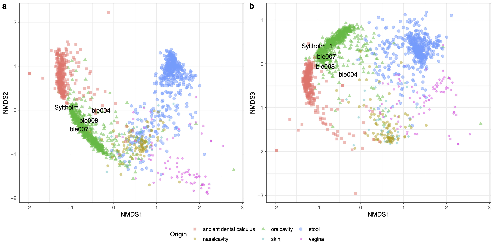

15 Metagenomik pratik
15.1 Proje klasörünün kurulumu
Öncelikle çalışmada kullanacağımız kodları indirmek için depoyu çalışma alanımza klonlayalım:
git clone https://github.com/emrahkirdok/bioinformatics.gitArdından kodlarımızın bulunduğu klasöre gidelim:
cd bioinformatics/02-practice/ancient-metagenomicsÇalışma kapsamında kulanacağımız R kodlarını çalıştırmak için öncelikle conda ile R paketlerinin olduğu çevreyi kuralım. Ancak Metaphlan3 programı bu paket içerisinde yok. O programı siz sunucu üzerinde kurmalısınız. Conda paketi kurulumu için Bölüm A.1 kısmına bakabilirsiniz.
conda create --file env/environment.yml
conda activate harpixÇalışma kapsamında kullanacağımız veri setini aşağıda https://zenodo.org/records/1025296 bağlantısından indirebilirsiniz. Bu veri setini indirin ve proje klasörü içerisinde Data olarak kaydediniz.
Bununla birlikte, Metaphlan programını çalıştırmak için gerekli olan ham fastq dosyaları ve ara adımlara ait bam ve Metaphlan dosyaları ise ayrı bir bağlantı olarak verilecektir.
Son olarak çalışmada kullanacağımız çıktıları depolayacağımız klasörleri oluşturalım:
mkdir -p Results/metaphlan
mkdir -p Results/BetaDiversity15.2 Metaphlan3 ile analiz
Bu programı çalıştırmak için öncelikle elinizde Metaphlan3 veri tabanının olması gereklidir. Programı indirdikten sonra ilk çalıştırmanızda bu veri tabanı otomatik bir şekilde kuruluyor.
Bu kısımda kullanılacak koda bağlantıdan ulaşabilirsiniz.
En basit şekilde Metaphlan3 programını aşağıdaki şekilde çalıştırabilirsiniz:
metaphlan
--input_type fastq data/ble004-b1e1l1p1_ACCAACT_L003_ARmerged.180518_ST-E00201_0274_AHLCM3CCXY.all_unmapped.fastq.gz
-s Results/metaphlan/ble004-b1e1l1p1_ACCAACT_L003_ARmerged.180518_ST-E00201_0274_AHLCM3CCXY.all.sam
--nproc 20
--bowtie2out Results/metaphlan/le004-b1e1l1p1_ACCAACT_L003_ARmerged.180518_ST-E00201_0274_AHLCM3CCXY.all.bowtie2out \
--bowtie2db ${DB}
-x ${DBNAME} > Results/metaphlan/${BASE}_metaphlan.txt
Eğer elimizde aynı örneğe ait olan birden fazla fastq dosyası varsa, bir for döngüsü yazabiliriz. Sakız makalesinde de bu süreç uygulandı. Önce her örneğe ait fastq dosyaları analiz edildi, daha elde edilen sam dosyaları birleştirilerek son bir analiz yapıldı:
ml bioinfo-tools MetaPhlAn3 samtools
# Database location
DB=/sw/bioinfo/MetaPhlAn3/3.0.8/rackham/lib/python3.8/site-packages/metaphlan/metaphlan_databases
# Database name
DBNAME=mpa_v30_CHOCOPhlAn_201901
ID=ble004
FILES=sequences.txt
THREADS=10
# Run metaphlan for every fastq file of a specific sample
for FASTQ in $(grep ${ID} ${FILES})
do
BASE=$(basename $FASTQ _unmapped.fastq.gz)
metaphlan --input_type fastq ${FASTQ} -s Results/metaphlan/${BASE}.sam --nproc ${THREADS} --bowtie2out Results/metaphlan/${BASE}.bowtie2out --bowtie2db ${DB} -x ${DBNAME} > Results/metaphlan/${BASE}_metaphlan.txt
# Convert sam files to a bam file, and sort
# This makes the process fast
samtools view -Sb Results/metaphlan/${BASE}.sam > Results/metaphlan/${BASE}.bam
samtools sort Results/metaphlan/${BASE}.bam > Results/metaphlan/${BASE}.sorted.bam
doneDaha sonra bütün örneklere ait bam dosyalarını birleştirelim:
# Collect all bam files for a specific sample
BAMS=""
for FASTQ in $(grep ${ID} ${FILES})
do
BASE=$(basename $FASTQ _unmapped.fastq.gz)
BAMS="${BAMS} Results/metaphlan/${BASE}.sorted.bam"
done
# Merge all bam files that belongs to the specific sample
samtools merge -o Results/metaphlan/${ID}.bam ${BAMS}
samtools sort Results/metaphlan/${ID}.bam > Results/metaphlan/${ID}.sorted.bam
# Mark duplicates
samtools markdup -r Results/metaphlan/${ID}.sorted.bam Results/metaphlan/${ID}.sorted.rmdup.bam
# Metaphlan3 can read sam files. But it has to be a sam file, so convert it to a sam file
samtools view -h Results/metaphlan/${ID}.sorted.rmdup.bam > Results/metaphlan/${ID}.sorted.rmdup.sam
# Run metaphlan3 for the sam file
metaphlan --input_type sam Results/metaphlan/${ID}.sorted.rmdup.sam \
-s ${ID}.sam --nproc ${THREADS} \
--bowtie2out Results/metaphlan/${ID}.bowtie2out \
--bowtie2db ${DB} -x ${DBNAME} > Results/metaphlan/${ID}_metaphlan.txtHer örneğe ait olan Metaphlan dosyalarını birleştirelim. Aşağıda gösterilen merge_metaphlan_tables.py kodu, metaphlan ile gelmekte. Ancak her zaman PATH içerisinde olmuyor:
merge_metaphlan_tables.py Results/metaphlan/ble*_metaphlan.txt Results/metaphlan/ble007_metaphlan.txt Results/metaphlan/ble008_metaphlan.txt > Results/metaphlan/ble.txtSon olarak bu örnekler içerisindeki tür profillerini elde edelim:
grep -E "s__|clade" Results/metaphlan/ble.txt | sed 's/^.*s__//g' |cut -f1,3-8 | sed -e 's/clade_name/body_site/g' > Results/metaphlan/ble.txtBu tür profillerini hclust2.py programı ile bir ısı grafiğine çevirelim. Burada opsiyonları değiştirin, her zaman güzel grafikler oluşmuyor. Ayrıca bu programı ayrıca kurmanız gereklidir:
hclust2.py -i Results/metaphlan/ble.txt -o Results/metaphlan/abundance_heatmap_species.png --f_dist_f braycurtis --s_dist_f braycurtis --cell_aspect_ratio 0.5 -l --flabel_size 10 --slabel_size 10 --max_flabel_len 100 --max_slabel_len 100 --minv 0.1 --dpi 30015.3 Alfa ve Beta çeşitlilik analizleri
Örneklerimizde bulunan mikrobiyal içeriği incelemeye başlayabiliriz. Bunun için öncelikle iki tane dosyaya ihtiyacımız olacaktır:
Data/microbial-profile.txt: Antik diş taşları, diğer antik sakızlar, ve insan mikrobiyota projesinden elde edilmiş Metaphlan3 sonuçlarıData/microbial-metadata.txt: Bu örneklere ait metabilgiler
Gelin bu dosyaları inceleyelim:
less -S Data/microbial-profile.txt
less -S Data/microbial-metadata.txtİlk olarak örneklerde bulunan Phylum içeriklerine bakalım. Bu şekli oluşturmak için aşağıdaki komutu çalıştırmalısınız:
Rscript scripts/Figure-S1.R --profile Data/microbial-profile.txt --metadata Data/microbial-metadata.txt --out Results/BetaDiversity/Figure-S1.pdfBu işlemin sonucunda Şekil 15.1’de gösterilen şekil oluşmalı.
Örneklerin arasındaki Bray-Curtis uzaklıklarına bakalım şimdi. Bunun için aşağıdaki kodu çalıştıralım:
Rscript workflow/scripts/distance_plots.R --profile Data/microbial-profile.txt --metadata Data/microbial-metadata.txt --out1 Results/BetaDiversity/Bray_Curtis.pdf --out2 Results/BetaDiversity/Figure-S3.pdfBu kodu çalıştırdığımızda iki farklı şekil oluşacak. Şekil 15.2 bize, her örneğin sahip olduğu bray curtis uzaklıklarını vermektedir. Şekil 15.3 ise sadece sakız örneklerinin, diğer karşılaştırma örneklerine olan uzaklıklarını göstermektedir.
Ancak bu şekiller çok rahat okunmuyor. Bir görselleştirme yöntemi olan Non-metric multidimensional scaling metodunu kullanarak, elimizdeki Bray-Curtis matrisini görselleştrelim (?fig-nmds). Aşağıdaki kodu çalıştırmamız gereklidir:
Rscript scripts/Figure-1.R --profile data/microbial-profile.txt --metadata data/microbial-metadata.txt --out Results/BetaDiversity/Figure-1.pdf